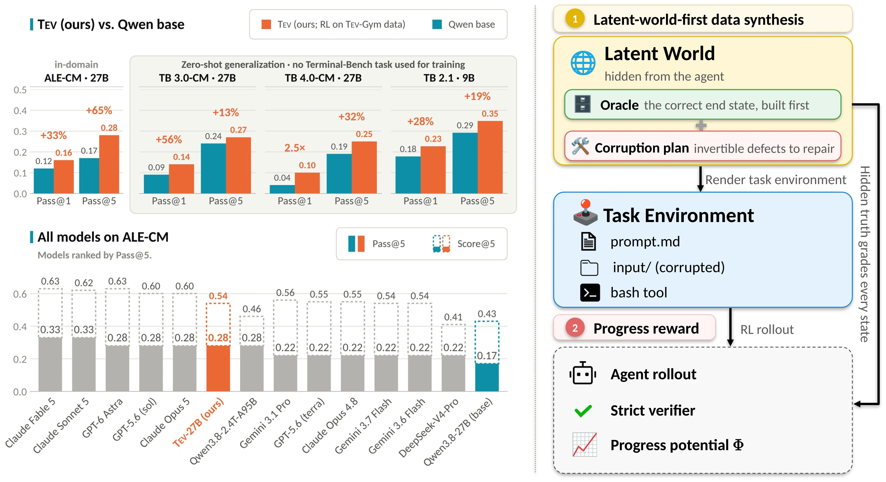
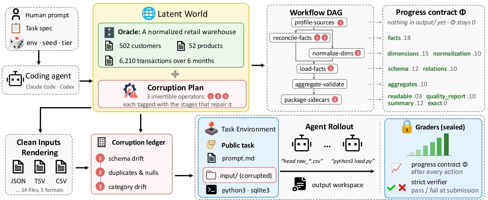
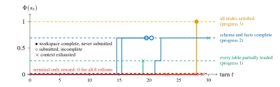
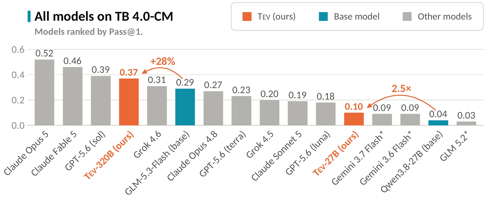

Abstract
Long-horizon agents have drawn growing attention for their ability to work autonomously—from hours to days—on economically valuable tasks, a capability essential to automated discovery and recursive self-improvement (RSI). Yet open-source models still struggle on long-horizon tasks, largely for lack of both training data and a working recipe, and scaling both is hard: long, complex tasks are difficult to curate and verify, and their rewards are sparse. We address both. First, we introduce Tev-Gym, the first long-horizon agent training dataset with verifiable, dense, progressive rewards—1,170 verified task environments across 7 domains. It is built on a latent-world-first approach that first constructs a latent world: a complete and correct hidden specification of the task domain, workflow, and expected state after each step. Each task is then progressively rendered from this specification into an agent-facing environment, enabling controllable complexity and a natural progress metric.
Second, we turn this metric into a training recipe: via progress-potential reward shaping (PPRS), we convert progress into a dense per-step reward that improves training efficiency and makes otherwise-intractable tasks trainable. Training with this recipe yields Tev-27B, which achieves substantial gains on the Agents' Last Exam computing and math sciences domains (ALE-CM), matching GPT-6 Astra and Claude Opus 5 at Pass@5. Despite training only on ALE-related data, it generalizes to the Terminal-Bench (TB) 3.0 and 4.0 subsets, surpassing GLM 5.2 and Gemini 3.7 Flash, and reaches Claude Opus 4.8-level performance on middle-horizon tasks such as TB 2.1.
The paper in under three minutes
Why long-horizon agent training is hard
1No long-horizon training corpus
Open agentic corpora such as SWE-Smith, TMAX, Endless Terminals, CLI-Gym, SETA and Terminal-Universe hold thousands of environments, but each is a pull-request-sized fix or a short terminal session, graded by unit tests with a pass/fail signal. Genuinely long-horizon tasks exist only in small, human-authored benchmarks that take weeks of expert effort per task and are meant for evaluation, not training.
2Terminal reward starves RL
GRPO normalizes rewards within a group of \(G\) rollouts of the same task. Under a terminal-only reward, a group in which every rollout fails has zero advantage everywhere and contributes nothing to the gradient. If the policy solves a task with probability \(p\), a fraction \((1-p)^G\) of groups is wasted, and on long-horizon tasks an untrained open model solves roughly one in ten or fewer.
Each square is one group of \(G\) rollouts. Gray groups have no successful rollout, so terminal-only reward gives every rollout in them zero advantage.
Tev-Gym versus prior agentic task corpora
| Dataset | Size | # Domains | Agent time (min) | Oracle | Grading metric | Progressive reward | P@1 | P@8 | |
|---|---|---|---|---|---|---|---|---|---|
| Median | Mean | ||||||||
| SWE-Smith | 50.1k | 1 | 2.0 | 2.4 | unit tests | pass/fail | ✗ | 47% | 52% |
| Terminal-Universe | 32.0k | 3 | NA | NA | pytest | pass/fail | ✗ | NA | NA |
| TMAX-15K | 14.6k | 3 | 1.3 | 2.1 | unit tests | pass/fail | ✗ | 74% | 80% |
| SETA | 4.5k | 4 | 1.2 | 2.1 | unit tests | test fraction | ✗ | 80% | 88% |
| Endless Terminals | 3.3k | 2 | 0.5 | 0.7 | unit tests | pass/fail | ✗ | 83% | 89% |
| CLI-Gym | 1.7k | 4 | 1.9 | 2.3 | unit tests | pass/fail | ✗ | 69% | 74% |
| Tev-Gym (ours) | 1,170 | 7 | 12.4 | 14.8 | latent world | staged Φ + pass/fail | ✓ | 29% | 40% |
Agent time is the median and mean wall-clock minutes per rollout of Gemini 3.6 Flash, from first action to last step. Difficulty is Pass@k of Gemini 3.6 Flash on every dataset. Tev-Gym tasks run the longest and are the hardest to solve.
Latent-world-first synthesis
Pipelines that ask a language model to write the task, its inputs and its checker have no true answer to check against. We build the answer first: a latent world \(W\), the complete and correct hidden state of the task domain. The environment is then rendered from \(W\) and corrupted in declared, invertible ways, so \(W\) is an exact answer key for the final output and for every intermediate state.

- Task sourcesTraining data targets ALE-CM, grouped into seven domains. We sample specifications within each domain and author a generator around each one.
- World constructionA seeded program builds the latent world \(W\) for a given seed and scale tier (e.g. a warehouse's customers, products and transactions), checks its invariants, and draws a defect plan.
- Workflow graphThe workflow is compiled by code, with no model in the loop, into a DAG of dependent stages. Its critical path sets the task's horizon, and its stages form the skeleton of the progress reward.
- Artifact rendering\(W\) is projected into the task's input files: CSV, JSON, SQLite,
safetensorsshards, stripped binaries or infrastructure manifests. Rendering must round-trip back to \(W\) exactly. - Controlled corruptionThe defect plan injects schema drift, duplicate and missing records, category drift, scrambled shard indices, stale caches and more. The corrupted tree \(s_0\) is the task; the untouched \(W\) is the ground truth.
- Public spec & hidden suiteThe prompt \(x\) is the only description the agent sees. A sealed suite of metamorphic transforms and plausible-but-wrong counterfactuals is used at verification time.
Seven domains:
- Software engineering
- Data engineering
- AI/CS research
- Mathematics & operations research
- Security & forensics
- Infrastructure administration
- Quantum computing
The pipeline is not tied to ALE-CM. The paper's appendix walks through three more environments: AWS cost optimization with a billing-dashboard screenshot rendered from the latent world, closed-loop EnergyPlus building control, and financial-statement reconstruction from SEC-style filings.
Progress-potential reward shaping (PPRS)
The latent world that grades task completion also grades its middle. Every Tev-Gym environment ships a progress contract: nodes \(v \in V\), each a checkable state of the output workspace taken from the workflow DAG, with weights \(w_v\) summing to 1 and prerequisite sets. A partial scorer \(c_v(s) \in [0,1]\) grades the agent's current workspace \(s\) against \(W\), and credit is prerequisite-gated: \(\tilde c_v(s)\) is the lowest partial score among \(v\) and all of its prerequisites.
Rises as the workflow is completed and falls on regressions. Because \(W\) exists before the task, every correct intermediate state is known exactly: no human step labels, trained reward model or LLM judge.
With \(\lambda = 0.25\). Since \(\Phi \le 1\), any passing rollout earns \(1+\lambda\), more than any failing one. A group where nothing passes still has rewards \(\lambda\Phi(s_T^{(i)})\) that rank rollouts by how far they got.

Results
We train Qwen3.5-9B on the 264-task unit tier and Qwen3.8-27B on the full Tev-Gym corpus with DPPO and the shaped reward above: 24 rollouts for each of 8 tasks per step, a 65,536-token budget per rollout, at most 64 tool calls, and a single bash tool. To test whether the recipe transfers to a larger base model, we also train GLM-5.3-Flash the same way, giving Tev-320B, which we evaluate on the TB 3.0 and 4.0 subsets. We evaluate in-domain on ALE-CM, the computing-and-math split of Agents' Last Exam, and zero-shot on the Terminal-Bench 3.0 and 4.0 “CM” subsets (22 and 18 tasks) and the mid-horizon TB 2.1. The subsets track full-set performance (Pearson \(r = 0.96\) and \(0.97\) for TB 3.0 and 4.0 P@1), and no Tev-Gym environment shares a 13-gram or 8-gram with any evaluation task.

Long horizon, in domain. Tev-27B raises P@5 from 0.17 to 0.28, matching GPT-6 Astra and Claude Opus 5, and closes more than two-thirds of the gap to Claude Fable 5 (0.33). It produces 33% more full solutions (P@1) than its base, and beats Qwen3.8-2.4T-A95B under the same harness on P@1. Tev-9B nearly doubles its base's best-of-5 solve rate.
| Model | Harness | Math & Science | ML | Coding & System | All (Avg) | ||||||||||||
|---|---|---|---|---|---|---|---|---|---|---|---|---|---|---|---|---|---|
| S@1 | S@5 | P@1 | P@5 | S@1 | S@5 | P@1 | P@5 | S@1 | S@5 | P@1 | P@5 | S@1 | S@5 | P@1 | P@5 | ||
| Frontier API models | |||||||||||||||||
| GPT-6 Astra | Codex | 0.58 | 0.58 | 0.38 | 0.38 | 0.48 | 0.49 | 0.20 | 0.20 | 0.81 | 0.85 | 0.20 | 0.20 | 0.62 | 0.63 | 0.28 | 0.28 |
| Claude Fable 5 | Claude Code | 0.47 | 0.51 | 0.38 | 0.38 | 0.52 | 0.57 | 0.24 | 0.40 | 0.83 | 0.90 | 0.20 | 0.20 | 0.58 | 0.63 | 0.29 | 0.33 |
| GPT-5.6 (sol) | Codex | 0.50 | 0.51 | 0.38 | 0.38 | 0.46 | 0.49 | 0.20 | 0.20 | 0.82 | 0.85 | 0.20 | 0.20 | 0.58 | 0.60 | 0.28 | 0.28 |
| GPT-5.6 (terra) | Codex | 0.51 | 0.56 | 0.38 | 0.38 | 0.25 | 0.26 | 0.00 | 0.00 | 0.75 | 0.83 | 0.20 | 0.20 | 0.50 | 0.55 | 0.22 | 0.22 |
| Claude Opus 5 | Claude Code | 0.51 | 0.53 | 0.38 | 0.38 | 0.43 | 0.46 | 0.20 | 0.20 | 0.85 | 0.87 | 0.20 | 0.20 | 0.58 | 0.60 | 0.28 | 0.28 |
| Claude Sonnet 5 | Claude Code | 0.50 | 0.51 | 0.38 | 0.38 | 0.39 | 0.56 | 0.12 | 0.40 | 0.80 | 0.87 | 0.20 | 0.20 | 0.55 | 0.62 | 0.26 | 0.33 |
| Claude Opus 4.8 | Claude Code | 0.48 | 0.51 | 0.38 | 0.38 | 0.31 | 0.33 | 0.00 | 0.00 | 0.80 | 0.86 | 0.20 | 0.20 | 0.52 | 0.55 | 0.22 | 0.22 |
| Gemini 3.7 Flash | Gemini CLI | 0.48 | 0.50 | 0.38 | 0.38 | 0.26 | 0.29 | 0.00 | 0.00 | 0.84 | 0.86 | 0.20 | 0.20 | 0.52 | 0.54 | 0.22 | 0.22 |
| Gemini 3.6 Flash | Gemini CLI | 0.48 | 0.51 | 0.35 | 0.38 | 0.25 | 0.26 | 0.00 | 0.00 | 0.81 | 0.86 | 0.20 | 0.20 | 0.51 | 0.54 | 0.21 | 0.22 |
| Gemini 3.1 Pro | Gemini CLI | 0.49 | 0.52 | 0.35 | 0.38 | 0.27 | 0.29 | 0.00 | 0.00 | 0.82 | 0.88 | 0.20 | 0.20 | 0.52 | 0.56 | 0.21 | 0.22 |
| Open-source models | |||||||||||||||||
| Qwen3.8-2.4T-A95B | Vanillux2 | 0.20 | 0.38 | 0.20 | 0.38 | 0.10 | 0.20 | 0.04 | 0.20 | 0.74 | 0.86 | 0.16 | 0.20 | 0.32 | 0.46 | 0.14 | 0.28 |
| DeepSeek-V4-pro | Vanillux2 | 0.12 | 0.25 | 0.12 | 0.25 | 0.10 | 0.20 | 0.04 | 0.20 | 0.73 | 0.88 | 0.16 | 0.20 | 0.29 | 0.41 | 0.11 | 0.22 |
| Qwen3.5-9B (base) | Vanillux2 | 0.07 | 0.12 | 0.00 | 0.00 | 0.19 | 0.26 | 0.00 | 0.00 | 0.59 | 0.73 | 0.20 | 0.20 | 0.25 | 0.33 | 0.06 | 0.06 |
| Tev-9B (ours) | Vanillux2 | 0.14 | 0.29 | 0.04 | 0.12 | 0.23 | 0.26 | 0.00 | 0.00 | 0.56 | 0.73 | 0.20 | 0.20 | 0.29 | 0.40 | 0.07 | 0.11 |
| Δ (Tev-9B − Qwen3.5-9B) | – | 0.07↑ | 0.17↑ | 0.04↑ | 0.12↑ | 0.04↑ | – | – | – | 0.03↓ | – | – | – | 0.04↑ | 0.07↑ | 0.01↑ | 0.05↑ |
| Qwen3.8-27B (base) | Vanillux2 | 0.15 | 0.25 | 0.15 | 0.25 | 0.21 | 0.32 | 0.00 | 0.00 | 0.74 | 0.82 | 0.20 | 0.20 | 0.33 | 0.43 | 0.12 | 0.17 |
| Tev-27B (ours) | Vanillux2 | 0.23 | 0.50 | 0.23 | 0.50 | 0.26 | 0.29 | 0.00 | 0.00 | 0.82 | 0.86 | 0.20 | 0.20 | 0.40 | 0.54 | 0.16 | 0.28 |
| Δ (Tev-27B − Qwen3.8-27B) | – | 0.08↑ | 0.25↑ | 0.08↑ | 0.25↑ | 0.05↑ | 0.03↓ | – | – | 0.08↑ | 0.04↑ | – | – | 0.07↑ | 0.11↑ | 0.04↑ | 0.11↑ |
S@k is the mean graded score and P@k the fraction of tasks fully solved: @1 averages 5 rollouts per task, @5 is best-of-5.
Longer horizon, zero-shot. Each TB 3.0 task takes an expert about eight hours. Tev-27B raises P@1 from 0.09 to 0.14 (+56%), surpassing GLM 5.2, the strongest open-source model on the leaderboard. The recipe carries over to a stronger base: Tev-320B, trained from GLM-5.3-Flash, raises P@1 from 0.20 to 0.27 (+35%), with gains in every category and the largest on security (0.22 → 0.45), and edges past Grok 4.5 and Claude Opus 4.8. A gap to the frontier remains: Claude Opus 5 reaches 0.53.
| Model | Software | ML | Operations | Security | All | |||||
|---|---|---|---|---|---|---|---|---|---|---|
| P@1 | P@5 | P@1 | P@5 | P@1 | P@5 | P@1 | P@5 | P@1 | P@5 | |
| Claude Fable 5 | 0.50 | 0.80 | 0.45 | 0.50 | 0.15 | 0.25 | 0.40 | 0.75 | 0.41 | 0.64 |
| Claude Opus 5 | 0.54 | 0.60 | 0.60 | 0.75 | 0.40 | 0.50 | 0.55 | 0.75 | 0.53 | 0.64 |
| GPT-5.6 (sol) | 0.32 | 0.50 | 0.65 | 0.75 | 0.10 | 0.25 | 0.70 | 0.75 | 0.41 | 0.55 |
| GPT-5.6 (terra) | 0.22 | 0.50 | 0.55 | 0.75 | 0.05 | 0.25 | 0.50 | 0.75 | 0.30 | 0.55 |
| GPT-5.6 (luna) | 0.18 | 0.30 | 0.25 | 0.50 | 0.00 | 0.00 | 0.30 | 0.50 | 0.18 | 0.32 |
| Grok 4.6 | 0.24 | 0.50 | 0.50 | 0.75 | 0.00 | 0.00 | 0.55 | 0.75 | 0.30 | 0.50 |
| Claude Sonnet 5 | 0.18 | 0.40 | 0.25 | 0.50 | 0.00 | 0.00 | 0.20 | 0.25 | 0.16 | 0.32 |
| Claude Opus 4.8 | 0.20 | 0.70 | 0.10 | 0.25 | 0.05 | 0.25 | 0.40 | 0.50 | 0.19 | 0.50 |
| Grok 4.5 | 0.14 | 0.30 | 0.45 | 1.00 | 0.15 | 0.50 | 0.50 | 0.75 | 0.26 | 0.55 |
| GLM 5.2 | 0.04 | 0.20 | 0.05 | 0.25 | 0.00 | 0.00 | 0.05 | 0.25 | 0.04 | 0.18 |
| Gemini 3.7 Flash* | 0.08 | 0.20 | 0.00 | 0.00 | 0.00 | 0.00 | 0.20 | 0.50 | 0.07 | 0.18 |
| Gemini 3.6 Flash* | 0.04 | 0.20 | 0.00 | 0.00 | 0.00 | 0.00 | 0.00 | 0.00 | 0.02 | 0.09 |
| Qwen3.8-27B (base) | 0.17 | 0.43 | 0.00 | 0.00 | 0.00 | 0.00 | 0.05 | 0.25 | 0.09 | 0.24 |
| Tev-27B | 0.15 | 0.39 | 0.19 | 0.25 | 0.00 | 0.00 | 0.20 | 0.25 | 0.14 | 0.27 |
| Δ (Tev-27B − Qwen3.8-27B) | 0.02↓ | 0.04↓ | 0.19↑ | 0.25↑ | – | – | 0.15↑ | – | 0.05↑ | 0.03↑ |
| GLM-5.3-Flash (base) | 0.18 | 0.60 | 0.35 | 0.50 | 0.05 | 0.25 | 0.22 | 0.50 | 0.20 | 0.50 |
| Tev-320B | 0.21 | 0.70 | 0.40 | 0.50 | 0.10 | 0.25 | 0.45 | 0.50 | 0.27 | 0.55 |
| Δ (Tev-320B − GLM-5.3-Flash) | 0.03↑ | 0.10↑ | 0.05↑ | – | 0.05↑ | – | 0.23↑ | – | 0.07↑ | 0.05↑ |
Terminal-Bench 3.0 “CM” subset (22 tasks). Leaderboard rows are from the official per-trial results (5 trials per task); *evaluated by us, not on the official leaderboard.
Longer horizon, zero-shot. The 27B base model fully solves only 4% of attempts. Tev-27B raises P@1 from 0.04 to 0.10 (2.5×) and P@5 from 0.19 to 0.25. Tev-320B raises P@1 from 0.29 to 0.37 (+28%), the strongest open-source result on this subset, trailing only Claude Opus 5 (0.52), Claude Fable 5 and GPT-5.6 (sol). Its P@5 stays at 0.56: training mainly makes the model solve the tasks it can already reach more reliably, rather than unlocking new ones.
| Model | Software | ML | Operations | Security | All | |||||
|---|---|---|---|---|---|---|---|---|---|---|
| P@1 | P@5 | P@1 | P@5 | P@1 | P@5 | P@1 | P@5 | P@1 | P@5 | |
| Claude Fable 5 | 0.53 | 0.62 | 0.60 | 0.75 | 0.05 | 0.25 | 0.70 | 1.00 | 0.46 | 0.61 |
| Claude Opus 5 | 0.47 | 0.62 | 0.75 | 1.00 | 0.20 | 0.50 | 0.90 | 1.00 | 0.52 | 0.72 |
| GPT-5.6 (sol) | 0.33 | 0.62 | 0.70 | 1.00 | 0.00 | 0.00 | 0.80 | 1.00 | 0.39 | 0.61 |
| GPT-5.6 (terra) | 0.10 | 0.38 | 0.50 | 0.75 | 0.00 | 0.00 | 0.70 | 1.00 | 0.23 | 0.44 |
| GPT-5.6 (luna) | 0.12 | 0.25 | 0.25 | 0.50 | 0.05 | 0.25 | 0.50 | 0.50 | 0.18 | 0.33 |
| Grok 4.6 | 0.30 | 0.50 | 0.55 | 0.75 | 0.00 | 0.00 | 0.50 | 1.00 | 0.31 | 0.50 |
| Claude Sonnet 5 | 0.28 | 0.62 | 0.20 | 0.75 | 0.00 | 0.00 | 0.20 | 0.50 | 0.19 | 0.50 |
| Claude Opus 4.8 | 0.20 | 0.50 | 0.35 | 0.50 | 0.05 | 0.25 | 0.80 | 1.00 | 0.27 | 0.50 |
| Grok 4.5 | 0.12 | 0.12 | 0.35 | 0.75 | 0.00 | 0.00 | 0.60 | 1.00 | 0.20 | 0.33 |
| GLM 5.2 | 0.06* | 0.24* | 0.02* | 0.10* | 0.00* | 0.00* | 0.00* | 0.00* | 0.03* | 0.13* |
| Gemini 3.7 Flash* | 0.12 | 0.25 | 0.00 | 0.00 | 0.00 | 0.00 | 0.30 | 0.50 | 0.09 | 0.17 |
| Gemini 3.6 Flash* | 0.20 | 0.25 | 0.00 | 0.00 | 0.00 | 0.00 | 0.00 | 0.00 | 0.09 | 0.11 |
| Qwen3.8-27B (base) | 0.07 | 0.31 | 0.05 | 0.25 | 0.00 | 0.00 | 0.00 | 0.00 | 0.04 | 0.19 |
| Tev-27B | 0.17 | 0.33 | 0.12 | 0.46 | 0.00 | 0.00 | 0.00 | 0.00 | 0.10 | 0.25 |
| Δ (Tev-27B − Qwen3.8-27B) | 0.10↑ | 0.02↑ | 0.07↑ | 0.21↑ | – | – | – | – | 0.06↑ | 0.06↑ |
| GLM-5.3-Flash (base) | 0.16 | 0.50 | 0.60 | 0.75 | 0.05 | 0.25 | 0.68 | 1.00 | 0.29 | 0.56 |
| Tev-320B | 0.25 | 0.50 | 0.65 | 0.75 | 0.15 | 0.25 | 0.70 | 1.00 | 0.37 | 0.56 |
| Δ (Tev-320B − GLM-5.3-Flash) | 0.09↑ | – | 0.05↑ | – | 0.10↑ | – | 0.02↑ | – | 0.08↑ | – |
Terminal-Bench 4.0 “CM” subset (18 tasks). Leaderboard rows are from the official per-trial results (5 trials per task); *evaluated by us, not on the official leaderboard.
Middle horizon, zero-shot. No training data targets TB 2.1. Tev-9B still raises P@1 by 28% and P@5 by 19% over its base, and Tev-27B reaches 0.794 P@1, on par with Claude Opus 4.8, though still behind Claude Fable 5 and GPT-6 Astra. Training on long-horizon tasks also improves standard mid-horizon work.
| Model | Pass@1 | Pass@5 |
|---|---|---|
| GPT-6 Astra (Codex, high) | 0.874 | 0.944 |
| Fable 5 (Claude Code, xhigh) | 0.838 | 0.933 |
| Opus 4.8 (Claude Code, high) | 0.789 | 0.944 |
| Sonnet 5 (Claude Code, high) | 0.746 | 0.921 |
| Qwen3.5-9B (base) | 0.178 | 0.292 |
| Tev-9B (ours) | 0.227 | 0.348 |
| Δ (Tev-9B − Qwen3.5-9B) | 0.049↑ | 0.056↑ |
| Qwen3.8-27B (base) | 0.764 | 0.864 |
| Tev-27B (ours) | 0.794 | 0.884 |
| Δ (Tev-27B − Qwen3.8-27B) | 0.030↑ | 0.020↑ |
Terminal-Bench 2.1 (89 tasks). Frontier rows are from the official leaderboard (5 trials).
What matters: the latent world and the dense reward
| Method | Data | Reward | GPU-h / step | ALE-CM | |||||||
|---|---|---|---|---|---|---|---|---|---|---|---|
| World | DAG | Hidden truth | Signal | Credit | Adv. norm. | S@1 | S@5 | P@1 | P@5 | ||
| Qwen3.5-9B (base) | – | – | – | no RL | – | – | – | 0.25 | 0.33 | 0.06 | 0.06 |
| Tev-9B (ours) | ✓ | ✓ | ✓ | ΔΦt + terminal | Gt, γ=1 | per turn | 9.0 | 0.29 | 0.40 | 0.07 | 0.11 |
| Data ablation: replace one construction step with an LLM; terminal reward, compare with Sparse | |||||||||||
| Public-view verifier | ✓ | ✓ | LLM | terminal | whole rollout | per rollout | 22.3 | 0.24 | 0.35 | 0.04 | 0.06 |
| Prompt-first | LLM | LLM | LLM | terminal | whole rollout | per rollout | 11.8 | 0.23 | 0.32 | 0.06 | 0.06 |
| Reward ablation: keep Tev-Gym, change how Φ enters training | |||||||||||
| Sparse (terminal only) | ✓ | ✓ | ✓ | terminal | whole rollout | per rollout | 16.7 | 0.25 | 0.32 | 0.06 | 0.06 |
| PPRS, pooled norm. | ✓ | ✓ | ✓ | ΔΦt + terminal | Gt, γ=1 | per rollout | 10.9 | 0.28 | 0.35 | 0.06 | 0.06 |
| Direct reward (additive) | ✓ | ✓ | ✓ | Φ(st) + terminal | Gt, γ=0 | per turn | 9.7 | 0.29 | 0.35 | 0.06 | 0.06 |
Ablations on ALE-CM with Qwen3.5-9B. In the data ablations, GPT-5.6 Sol (xhigh) replaces the marked construction steps. GPU-h/step is the mean time of one training step times the recipe's 32 GPUs, in H100 GPU-hours.
The latent world is what makes the data work
Letting an LLM write the verifier from the agent's view (public-view verifier) or generate the whole task prompt-first leaves no hidden truth to check against. Neither improves over the base model in S@1 (0.24 and 0.23 vs. 0.25), and the public-view variant discards 88% of sampled groups during training. The full method leads both by 0.05–0.06 S@1 and 0.05 P@5.
Dense reward trains better and cheaper
On the same data, PPRS improves S@1 by 0.04 over terminal-only reward at 9.0 instead of 16.7 GPU-hours per step. Per-turn normalization keeps credit for later turns, and \(\gamma = 1\) carries progress back to earlier actions. At 27B the gap widens: terminal-only reward yields almost entirely zero-advantage groups and never completes a single optimizer step.
Example: root-causing a crashing Kubernetes service
ALE-CM task k8s_payment_api_root_cause_analysis (Coding & System). From a kubectl capture, the Deployment/HPA YAML and a crashing pod's log, the agent writes a JSON root-cause report with verbatim evidence strings and a rollback verdict. Every agent finds the same root causes, but Tev-27B and Claude Fable 5 ground the liveness-probe cause in the measurement that explains it and judge rollback safe. The base model and GPT-6 Astra cite only the symptoms and decline rollback, forfeiting the decisive grader component.
initialDelaySeconds: 5 … cache warm-up complete (duration=6.67s) … “takes roughly 8 s to start … probe fires before the server is listening” … safe_to_rollback: true … “pod-template settings of revision 17, not … schema changes.”apply_patch …build_rca.py to extract exact lines …safe_to_rollback: false.initialDelaySeconds: 5 … cache warm-up complete (duration=6.67s …) … “warm-up … longer than the 5 s initial delay” …safe_to_rollback: true.BibTeX
@misc{hu2026tev,
title = {{Tev}: Scaling Long-Horizon Agentic Environments with Dense Progress Rewards},
author = {Hu, Wenbo and Pramanick, Shraman and Singh, Krishna Kumar and
Peng, Nanyun and Chang, Kai-Wei and Lee, Yong Jae},
year = {2026},
note = {Preprint}
}